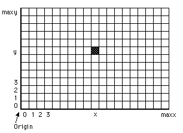

Draw.Dot
Syntax
Draw.Dot (x, y, Color : int)
Description
The Draw.Dot procedure is used to color the dot (pixel) at location (x, y) using the specified Color.

Example
This program randomly draws dots with random colors. The maxx, maxy and maxcolor functions give the maximum x, y and color values.
View.Set ("graphics")
var x, y, c : int
loop
x := Rand.Int (0, maxx) % Random x
y := Rand.Int (0, maxy) % Random y
c := Rand.Int (0, maxcolor) % Random color
Draw.Dot (x, y, c)
end loop
Details
The screen must be in a "graphics" mode. If the screen is not in a "graphics" mode, an error will occur. See View.Set for details.
Status
Exported qualified.
This means that you can only call the function by calling Draw.Dot, not by calling Dot.
See also
View.Set, maxx, maxy and the various procedures in the Draw unit.